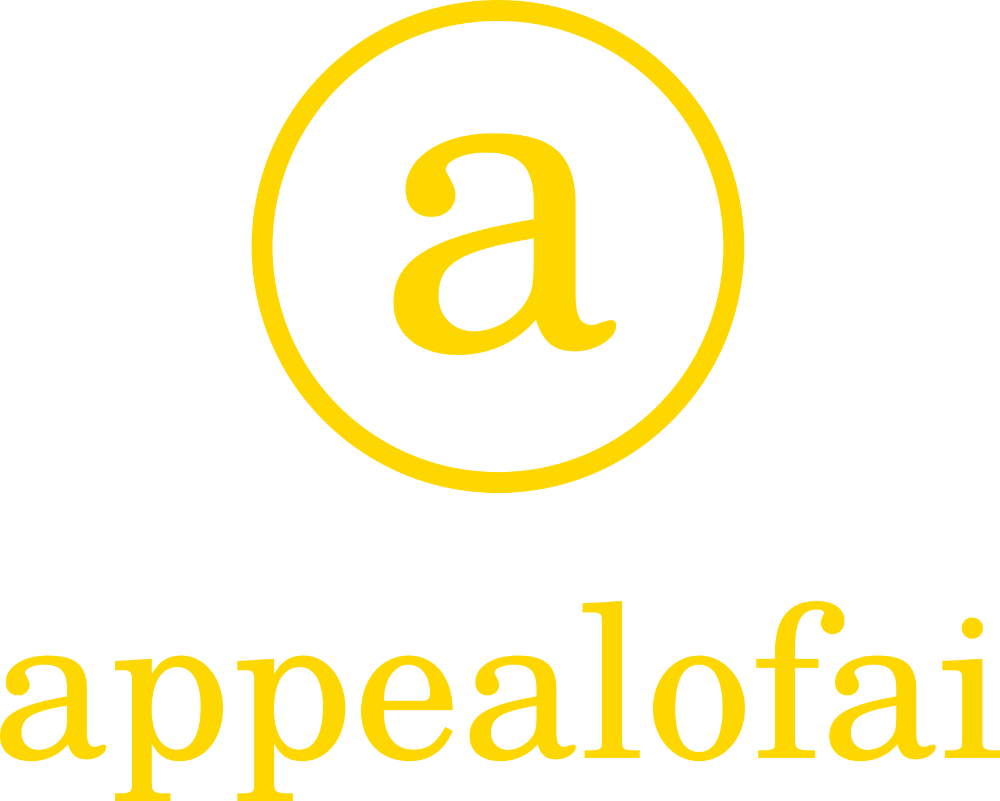

AI culture is becoming a public infrastructure question.
Dummy copy: The week’s main story connects releases, regulation, creative tools and the social layer around machine intelligence.

Independent AI Gazette . Art, Culture, Identity, Machines
Feel the appeal.
A small newspaper for AI-native art, culture, identity and the strange public life of intelligent systems.
Latest
Dummy copy: A concise report on a current release, product shift or cultural debate. The website version keeps the source trail, context and follow-up notes; the X version becomes the public hook.
Model behavior, creator workflows and the language people use when tools become normal.
Notes on taste, defaults, artifacts and the difference between output and direction.
A reusable format for revisiting claims, launches and predictions after a few months.
Briefs
Fast notes on current developments. Ideal for X hooks, short threads and weekly updates.
Arguments with a point of view. These should live on the site first and be summarized on X.
Visual experiments, prompt notes, identity studies and artifacts from AI-native production.
Essays
Dummy copy: Essays should be more than updates. They should make a claim, show sources, take a position and remain useful after the timeline has moved on.
Polls
Would you trust an AI-generated image more if the process was documented?
Dummy poll: publish the question on X, then post the result and interpretation here.
Sources
Use numbered footnotes in article text for claims, quotes, reports and primary sources.
End each article with a short source section: official docs, papers, posts, datasets or interviews.
X posts should link back to the website version when sources, nuance or updates matter.
About
Appeal of AI treats the website as the edition of record and X as the distribution layer. The look should feel like a small paper: authoritative, opinionated, careful with sources and visually memorable.